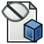

Std View Menu/fr

Introduction
Le Std Menu Affichage est l'un des 7 sous-menus du menu standard :
Fichier Édition Affichage Outils Macro Fenêtre Aide
Le menu Affichage fournit des outils pour modifier la vue 3D et les propriétés de vue des objets dans le modèle ainsi que des outils liés à l'affichage des composants d'interface.
Outils
Les outils suivants sont disponibles dans ce menu :
 Créer une nouvelle vue : crée une nouvelle vue 3D.
Créer une nouvelle vue : crée une nouvelle vue 3D.
 Vue orthographique : bascule en mode de vue orthographique.
Vue orthographique : bascule en mode de vue orthographique.
 Vue en perspective : bascule en mode vue en perspective.
Vue en perspective : bascule en mode vue en perspective.
 Plein écran : bascule le mode plein écran de la fenêtre principale.
Plein écran : bascule le mode plein écran de la fenêtre principale.
- Vues standards
 Tout afficher : adapte tous les objets visibles à l'intérieur de la vue.
Tout afficher : adapte tous les objets visibles à l'intérieur de la vue. Afficher la sélection : adapte les objets sélectionnés à l'intérieur de la vue.
Afficher la sélection : adapte les objets sélectionnés à l'intérieur de la vue. Aligner sur la sélection : aligne la vue sur la sélection. introduit dans la version 1.0
Aligner sur la sélection : aligne la vue sur la sélection. introduit dans la version 1.0- Axonométrique
 Isométrique : bascule vers une vue isométrique.
Isométrique : bascule vers une vue isométrique. Dimétrique : bascule vers une vue dimétrique.
Dimétrique : bascule vers une vue dimétrique. Trimétrique : bascule vers une vue trimétrique.
Trimétrique : bascule vers une vue trimétrique.
 Accueil : passe à la vue d'accueil par défaut.
Accueil : passe à la vue d'accueil par défaut. Vue de devant : bascule vers la vue de face.
Vue de devant : bascule vers la vue de face. Vue de dessus : bascule vers la vue de dessus.
Vue de dessus : bascule vers la vue de dessus. Vue de droite : bascule vers la vue de droite.
Vue de droite : bascule vers la vue de droite. Vue de l'arrière : bascule vers la vue arrière.
Vue de l'arrière : bascule vers la vue arrière. Vue de dessous : bascule vers la vue de dessous.
Vue de dessous : bascule vers la vue de dessous. Vue de gauche : bascule vers la vue de gauche.
Vue de gauche : bascule vers la vue de gauche. Rotation à gauche : fait pivoter la vue vers la gauche.
Rotation à gauche : fait pivoter la vue vers la gauche. Rotation à droite : fait pivoter la vue vers la droite.
Rotation à droite : fait pivoter la vue vers la droite.- Stocker la vue de travail : stocke les paramètres de la caméra de la vue 3D active dans sa vue de travail. introduit dans la version 0.21
- Rappel de la vue de travail : rappelle la vue de travail enregistrée de la vue 3D active. introduit dans la version 0.21
- Figer l'affichage
- Enregistrer les vues... : enregistre les vues figées dans un fichier.
- Charger les vues... : charge les vues figées à partir d'un fichier.
- Figer l'affichage : stocke la vue en cours dans une vue figée.
- Effacer les vues : supprime toutes les vues figées.
- Style de représentation
 Par défaut : bascule le style de dessin sur : Par défaut.
Par défaut : bascule le style de dessin sur : Par défaut. Points : bascule le style de dessin sur : Points.
Points : bascule le style de dessin sur : Points. Filaire : bascule le style de dessin sur : Filaire.
Filaire : bascule le style de dessin sur : Filaire. Ligne cachée : bascule le style de dessin sur : Ligne cachée.
Ligne cachée : bascule le style de dessin sur : Ligne cachée. Pas d'ombrage : bascule le style de dessin sur : Pas d'ombrage.
Pas d'ombrage : bascule le style de dessin sur : Pas d'ombrage. Ombré : bascule le style de dessin sur : Ombré.
Ombré : bascule le style de dessin sur : Ombré. Filaire ombré : bascule le style de dessin sur : Filaire ombré.
Filaire ombré : bascule le style de dessin sur : Filaire ombré.
 Boîte englobante : bascule le mode de surbrillance du cadre de sélection.
Boîte englobante : bascule le mode de surbrillance du cadre de sélection.
- Vue stéréoscopique
 Stéréo rouge/cyan : bascule en vue stéréo rouge/cyan.
Stéréo rouge/cyan : bascule en vue stéréo rouge/cyan. Tampon stéréo quadruple : bascule vers la vue stéréo du tampon quadruple.
Tampon stéréo quadruple : bascule vers la vue stéréo du tampon quadruple. Lignes stéréo entrelacées : bascule vers la vue stéréo des lignes entrelacées.
Lignes stéréo entrelacées : bascule vers la vue stéréo des lignes entrelacées. Colonnes stéréo entrelacées : bascule vers la vue stéréo des colonnes entrelacées.
Colonnes stéréo entrelacées : bascule vers la vue stéréo des colonnes entrelacées. Stéréo désactivée : désactive la vue stéréo.
Stéréo désactivée : désactive la vue stéréo. Position de la caméra : affiche les paramètres de la caméra dans la vue rapport et la console Python.
Position de la caméra : affiche les paramètres de la caméra dans la vue rapport et la console Python.
- Zoom
 Zoom avant : effectue un zoom avant sur la vue.
Zoom avant : effectue un zoom avant sur la vue. Zoom arrière : effectue un zoom arrière sur la vue.
Zoom arrière : effectue un zoom arrière sur la vue. Zoom de sélection : Effectue un zoom avant sur une zone rectangulaire.
Zoom de sélection : Effectue un zoom avant sur une zone rectangulaire.
- Fenêtre de document
- Ancrer : ancre une vue 3D.
- Désancrer : désancre une vue 3D.
 Plein écran : bascule le mode plein écran d'une vue 3D.
Plein écran : bascule le mode plein écran d'une vue 3D.
 Axes du repère : bascule les axes du repère.
Axes du repère : bascule les axes du repère.
 Couper selon des plans : coupe temporairement les objets.
Couper selon des plans : coupe temporairement les objets.
 Coupe persistante : crée des coupes persistantes d'objets et d'assemblages. -- Disponible si l'atelier Part ou l'atelier PartDesign ont été chargés.
Coupe persistante : crée des coupes persistantes d'objets et d'assemblages. -- Disponible si l'atelier Part ou l'atelier PartDesign ont été chargés.
 Appliquer une texture... : applique temporairement une texture à tous les objets.
Appliquer une texture... : applique temporairement une texture à tous les objets.
- Visibilité
 Basculer la visibilité : active/désactive la visibilité des objets sélectionnés.
Basculer la visibilité : active/désactive la visibilité des objets sélectionnés. Afficher la sélection : affiche les objets sélectionnés.
Afficher la sélection : affiche les objets sélectionnés. Masquer la sélection : masque les objets sélectionnés.
Masquer la sélection : masque les objets sélectionnés. Sélectionner les objets visibles : sélectionne tous les objets visibles.
Sélectionner les objets visibles : sélectionne tous les objets visibles. Basculer tous les objets : active/désactive la visibilité de tous les objets.
Basculer tous les objets : active/désactive la visibilité de tous les objets. Afficher tous les objets : affiche tous les objets.
Afficher tous les objets : affiche tous les objets.-  Masquer tous les objets : masque tous les objets.
 Basculer la sélectivité : active/désactive la sélection des objets.
Basculer la sélectivité : active/désactive la sélection des objets.
{kind=link}
 Basculer en mode navigation : active/désactive entre le mode de navigation et le mode d'édition.
Basculer en mode navigation : active/désactive entre le mode de navigation et le mode d'édition.
 Matériau... : définit le matériau des objets sélectionnés. -- Disponible si l'atelier Material a été chargé directement ou indirectement (via par exemple l'atelier Part ou l'atelier PartDesign). introduit dans la version 1.0
Matériau... : définit le matériau des objets sélectionnés. -- Disponible si l'atelier Material a été chargé directement ou indirectement (via par exemple l'atelier Part ou l'atelier PartDesign). introduit dans la version 1.0
 Apparence : définit les propriétés d'affichage des objets sélectionnés. -- Disponible si l'atelier Material a été chargé directement ou indirectement (via par exemple l'atelier Part ou l'atelier PartDesign).
Apparence : définit les propriétés d'affichage des objets sélectionnés. -- Disponible si l'atelier Material a été chargé directement ou indirectement (via par exemple l'atelier Part ou l'atelier PartDesign).
 Couleur aléatoire : applique une couleur diffuse aléatoire aux objets.
Couleur aléatoire : applique une couleur diffuse aléatoire aux objets.
 Couleur par face : définit les propriétés d'affichage des faces sélectionnées. Disponible si l'atelier Part ou l'atelier PartDesign ont été chargés.
Couleur par face : définit les propriétés d'affichage des faces sélectionnées. Disponible si l'atelier Part ou l'atelier PartDesign ont été chargés.
 Basculer la transparence : active/désactive la transparence des objets sélectionnés. introduit dans la version 1.0
Basculer la transparence : active/désactive la transparence des objets sélectionnés. introduit dans la version 1.0
- Sélecteur d'atelier -- Sélection d'un atelier à partir du sous-menu.
- Barres d'outils -- Chaque barre d'outils peut être activée ou désactivée dans le sous-menu.
- Fichier
- Edition introduit dans la version 0.21
- Presse-papiers introduit dans la version 0.21
- Atelier
- Macro
- Vue
- Vues individuelles introduit dans la version 1.0
- Structure
- Aide introduit dans la version 0.21
- ... Si l'atelier en cours possède des barres d'outils, elles apparaissent ici.
- Verrouiller les barres d'outils : si cette option est activée, les barres d'outils ne peuvent pas être déplacées. introduit dans la version 1.0
- Panneaux -- Chaque panneau peut être activé ou désactivé dans le sous-menu.
- Vue en arborescence -- Disponible comme paneeau indépendant si le Mode d'affichage de l'arborescence et des propriétés est mis à
Indépendant. - Éditeur de propriétés -- Idem.
- Vue combinée -- Combine l'arborescence et l'affichage des propriétés en un seul panneau. Disponible si le Mode d'affichage de l'arborescence et des propriétés est mis à
Combiné. - Fenêtre de sélection
- Console Python
- Vue rapport
- Panneau des tâches
- Vue DAG -- Non disponible par défaut, voir Vue DAG.
- Vue en arborescence -- Disponible comme paneeau indépendant si le Mode d'affichage de l'arborescence et des propriétés est mis à
- Fenêtres ancrables superposées introduit dans la version 1.0
- Basculer la superposition pour tout : active/désactive le mode de superposition pour toutes les fenêtres ancrables.
- Basculer la transparence pour tout : active/désactive le mode transparent pour toutes les fenêtres superposées ancrables. Cela permet aux fenêtres ancrables de rester transparentes tout le temps.
- Basculer une superposition : active/désactive le mode de superposition pour la fenêtre ancrée sous le curseur.
- Basculer une transparence : active/désactive le mode transparent pour la fenêtre ancrée sous le curseur. Cela permet à la fenêtre ancrée de rester transparente tout le temps.
- Souris sans effet sur les fenêtres superposées ancrées : ignore tous les événements de la souris dans les fenêtres superposées ancrées.
- Basculer à gauche : affiche/masque le panneau de recouvrement de gauche.
- Basculer à droite : affiche/masque le panneau de recouvrement de droite.
- Basculer en haut : affiche/masque le panneau de recouvrement supérieur.
- Basculer en bas : affiche/masque le panneau de recouvrement inférieur.
- Lien de navigation
 Objet lié : sélectionne l'objet lié et bascule à son document.
Objet lié : sélectionne l'objet lié et bascule à son document. Objet lié le plus profond : sélectionne l'objet lié le plus profond et bascule à son document.
Objet lié le plus profond : sélectionne l'objet lié le plus profond et bascule à son document. Tous les liens : sélectionne tous les liens vers un objet.
Tous les liens : sélectionne tous les liens vers un objet.
- Actions sur l'arborescence
- Synchroniser la vue : bascule la vue en arborescence en mode synchronisation.
- Synchroniser la sélection : bascule la vue en arborescence en mode Synchroniser la sélection.
- Synchroniser le placement : bascule la vue en arborescence en mode Synchroniser le placement.
- Préselection : bascule la vue en arborescence en mode Préselection.
- Enregistrer la sélection : bascule la vue en arborescence en mode Enregistrer la sélection.
- Document unique : bascule la vue en arborescence en mode Document unique.
- Tous les documents : bascule la vue en arborescence en mode Tous les documents.
- Réduire/développer : bascule la vue en arborescence en mode Réduire/développer.
 Déplacement : lance une opération de glissement pour les objets sélectionnés dans l'arborescence.
Déplacement : lance une opération de glissement pour les objets sélectionnés dans l'arborescence. Aller à la sélection : fait défiler l'arborescence jusqu'au premier objet créé dans une sélection de vue 3D.
Aller à la sélection : fait défiler l'arborescence jusqu'au premier objet créé dans une sélection de vue 3D. Sélection précédente : rétablit la sélection précédente de l'arborescence.
Sélection précédente : rétablit la sélection précédente de l'arborescence. Sélection suivante : rétablit la sélection suivante de l'arborescence.
Sélection suivante : rétablit la sélection suivante de l'arborescence.
- Barre d'état : bascule l'affichage de la Barre d'état.
- Fichier : Nouveau, Ouvrir, Fermer, Fermer tout, Enregistrer, Enregistrer sous, Enregistrer une copie, Enregistrer tout, Rétablir, Importer, Exporter, Fusion de projets, Informations sur le projet, Imprimer, Aperçu avant impression, Exporter au format PDF, Fichiers récents, Quitter
- Édition : Annuler, Rétablir, Couper, Copier, Coller, Dupliquer la sélection, Rafraîchir, Sélection par boîte, Sélection d'éléments par boîte, Tout sélectionner, Effacer, Vers la console Python, Positionner, Transformer, Aligner, Basculer le mode d'édition, Mode d'édition, Préférences
- Affichage :
- Divers : Créer une nouvelle vue, Vue orthographique, Vue en perspective, Plein écran, Boîte englobante, Axes du repère, Plan de coupe, Mappage de texture, Basculer en mode navigation, Apparence, Couleur aléatoire, Atelier, Barre d'état
- Vues standards : Tout afficher, Afficher la sélection, Isométrique, Dimétrique, Trimétrique, Accueil, Vue de devant, Vue de dessus, Vue de droite, Vue de l'arrière, Vue de dessous, Vue de gauche, Rotation à gauche, Rotation à droite
- Figer l'affichage : Enregistrer les vues, Charger les vues, Figer l'affichage, Effacer les vues
- Style de représentation : Par défaut, Points, Filaire, Ligne cachée, Pas d'ombrage, Ombré, Filaire ombré
- Stéréo : Stéréo rouge/cyan, Tampon stéréo quadruple, Lignes stéréo entrelacées, Colonnes stéréo entrelacées, Stéréo désactivée, Position de la caméra
- Zoom : Zoom avant, Zoom arrière, Zoom fenêtre
- Fenêtre de document : Dockée, Non dockée, Plein écran
- Visibilité : Basculer la visibilité, Afficher la sélection, Masquer la sélection, Sélectionner les objets visibles, Basculer tous les objets, Afficher tous les objets, Masquer tous les objets, Basculer la sélectivité, Basculer les mesures, Supprimer les mesures
- Barre d'outils : Fichier, Édition, Presse-papiers, Atelier, Macro, Vue, Structure, Aide
- Panneaux : Vue en arborescence, Éditeur de propriétés, Fenêtre de sélection, Panneau des tâches, Console Python, Vue DAG, Vue combinée, Vue rapport
- Navigation par lien : Objet lié, Objet lié le plus profond, Tous les liens
- Actions sur l'arborescence : Synchroniser la vue, Synchroniser la sélection, Synchroniser le placement, Présélection, Enregistrer la sélection, Document unique, Tous les documents, Réduire/développer, Déplacement, Aller à la sélection, Sélection précédente, Sélection suivante
- Outils : Éditeur des paramètres, Capture d'écran, Inspecteur du graphe de scène, Graphique de dépendance, Utilitaire de projet, Mesurer une distance, Ajouter un document texte, Vue en rotation, Convertisseur d'unités, Personnaliser, Gestionnaire des extensions
- Macro : Enregistrer une macro, Macros…, Macros récentes, Lancer la macro, Débogueur distant, Déboguer la macro, Arrêt du débogage, Passer outre, Rentrer dedans, Basculer le point d'arrêt
- Aide : Aide en ligne, Site web de FreeCAD, Documentation utilisateurs, Documentation pour programmer en Python, Documentation automatique des modules Python, Forum de FreeCAD, FAQ de FreeCAD, Signaler un bogue, À propos de FreeCAD, Qu'est-ce que c'est ?
- Démarrer avec FreeCAD
- Installation : Téléchargements, Windows, Linux, Mac, Logiciels supplémentaires, Docker, AppImage, Ubuntu Snap
- Bases : À propos de FreeCAD, Interface, Navigation par la souris, Méthodes de sélection, Objet name, Préférences, Ateliers, Structure du document, Propriétés, Contribuer à FreeCAD, Faire un don
- Aide : Tutoriels, Tutoriels vidéo
- Ateliers : Std Base, Arch, Assembly, CAM, Draft, FEM, Inspection, Mesh, OpenSCAD, Part, PartDesign, Points, Reverse Engineering, Robot, Sketcher, Spreadsheet, Surface, TechDraw, Test